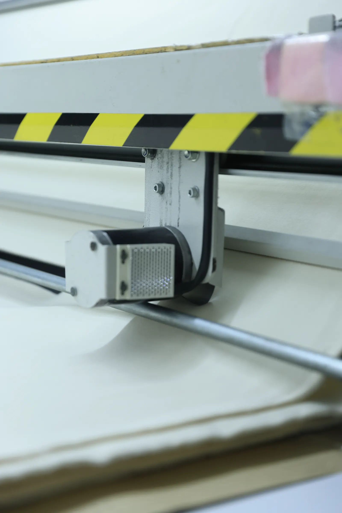
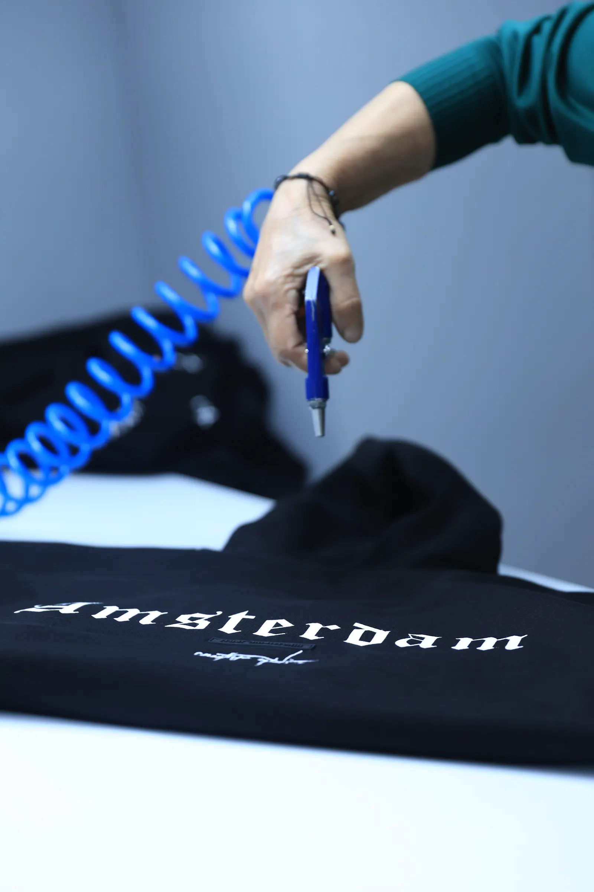

Fabric testing
Materials are tested so their properties can be considered during development.
QUALITY & CERTIFICATES
Fabric testing, sample approval and production review help us make considered decisions at every stage.
The standard of a garment is shaped by decisions made throughout development and production.
Materials are tested so their properties can be considered during development.
The sample gives the team a physical reference for fit, print and finish.
The approved production sample guides consistent execution.


Specific certificate documents and accreditation details have not yet been supplied for this site. They will be displayed here once verified and approved for publication.
Ask about qualityTell us which quality and documentation needs matter for your project.